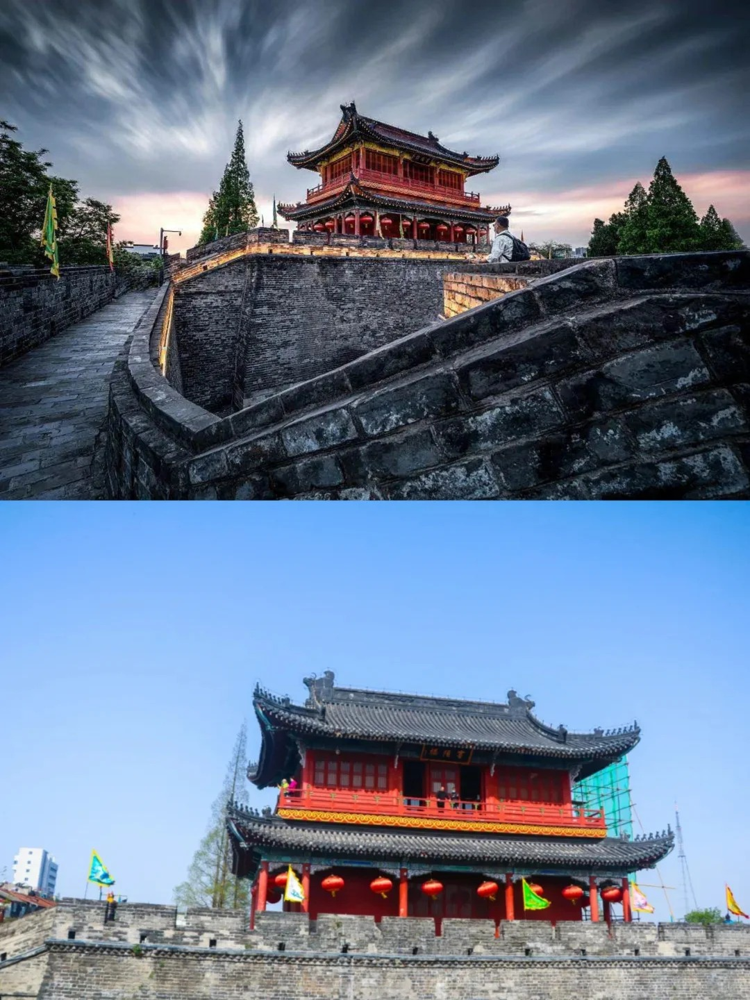
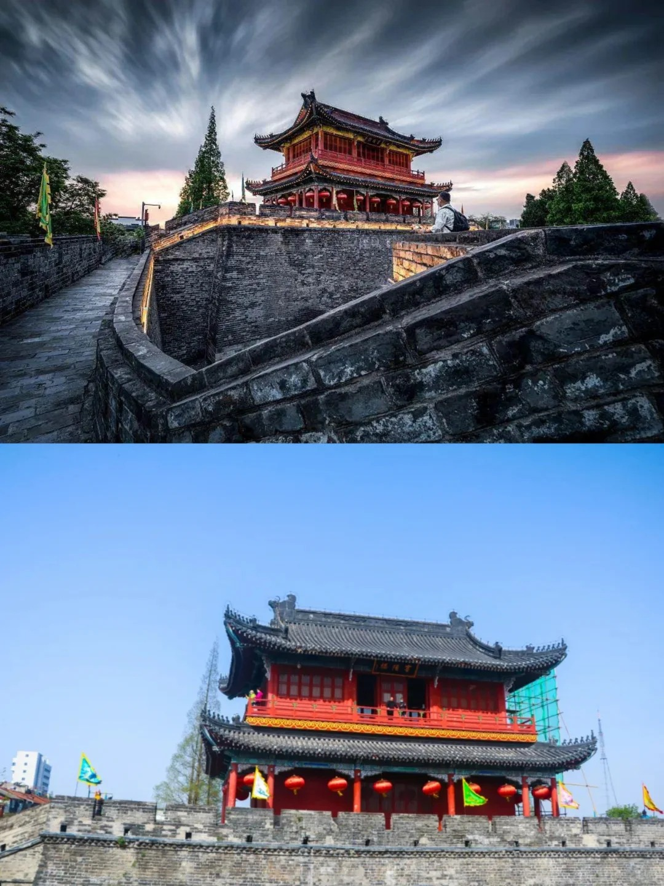
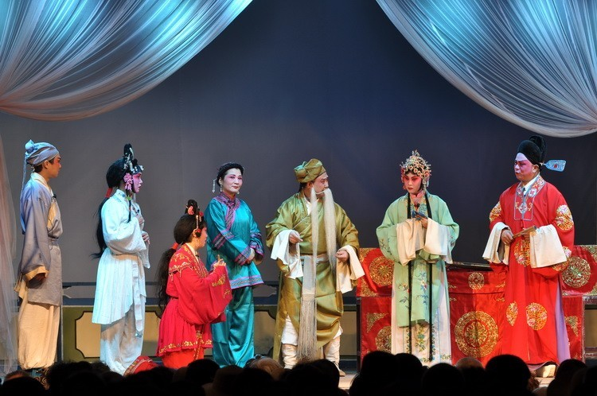

荆州 - 千年古城的魅力
荆州简介
荆州是中国湖北省下辖的地级市，位于湖北省中南部、长江中游、江汉平原腹地，介于东经 111°15′～114°05′，北纬 29°26′～31°37′，东依武汉市汉南区，东南隔江与咸宁市嘉鱼县、赤壁市相望，南滨江与湖南省岳阳市为邻，与益阳市、常德市接壤，西连宜昌市的当阳市、枝江市、宜都市
、五峰县，北接荆门市、潜江市、仙桃市，全市国土面积 14102.98 平方千米。截至 2022 年末，荆州常住人口 513.51 万人。
荆州历史悠久，文化底蕴深厚，是楚文化的发祥地和三国文化的荟萃地2。荆州古称 “江陵”，有着 5000 年的建城史和 500 年的建都史，先后有 20 代楚国君主在此定都。荆州的旅游资源丰富，有荆州古城墙、荆州博物馆、楚王车马阵等著名景点2。
荆州的经济以第二和第三产业为主，工业以农产品加工、纺织服装、智能装备、现代化工为主导产业，农产品加工业是荆州最大的产业，也是首个千亿产业。第三产业以文化旅游、现代物流为主。2022 年，荆州实现地区生产总值 3008.61 亿元，三次产业结构比例为 19.0：35.7：45.3。
荆州是中国重要的交通枢纽城市，拥有长江 “黄金水道” 和优质岸线，铁路、公路、航空等交通方式发达。荆州的美食也很有特色，有荆州鱼糕、荆州八宝饭、早堂面、笔架鱼肚等。
总之，荆州是一个充满魅力的城市，值得一游。

历史溯源
荆州是一座拥有悠久历史的城市，作为楚文化的发祥地之一，承载着深厚的文化底蕴。从古代起，这里就是兵家必争之地，见证了无数历史变迁。
 了解更多历史信息
了解更多历史信息名胜古迹
荆州有许多著名的名胜古迹，比如荆州古城墙，它是中国保存较为完好的古城墙之一，见证了岁月的沧桑。还有楚王车马阵，规模宏大，极具考古价值。
.jpg) 了解更多名胜古迹
了解更多名胜古迹
特色美食
荆州美食丰富多样，荆州鱼糕口感鲜嫩，公安锅盔酥脆可口，每一道美食都有其独特的风味。
 了解特色美食
了解特色美食
民俗文化
这里的民俗文化丰富多彩，荆州花鼓戏深受人们喜爱，传统节日的庆祝活动也热闹非凡。
 了解民俗文化我的母校
.jpg) 学校简介
学校简介 荆州现状
.jpg) 现状简介
现状简介